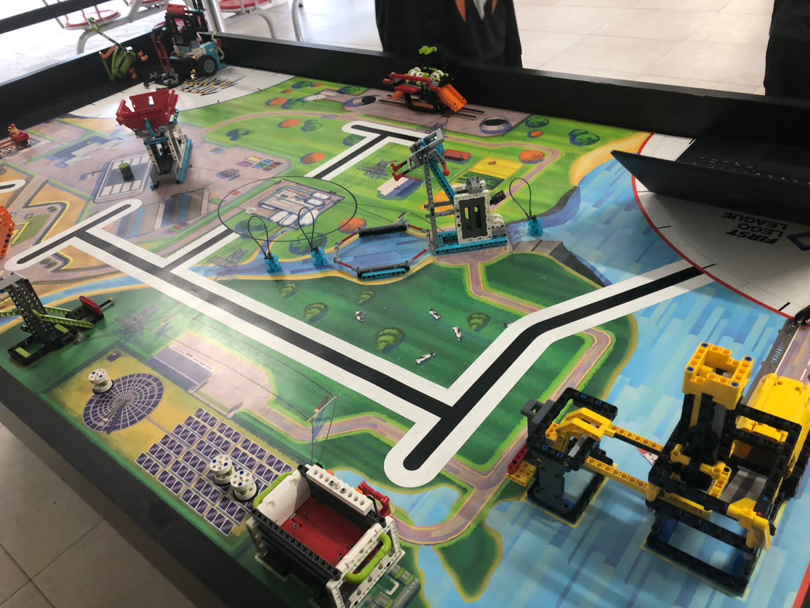
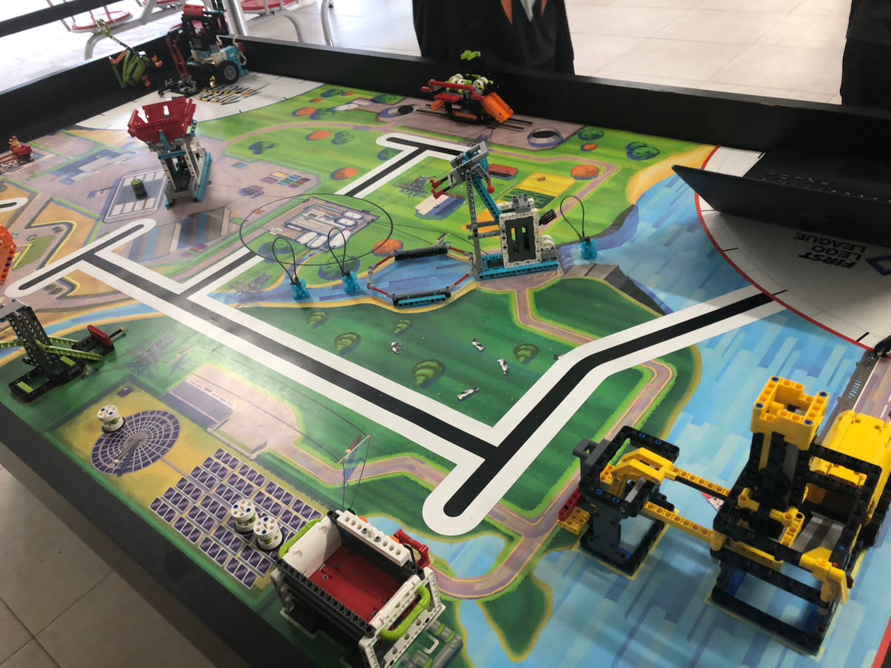

Torneio Interno VMRT
Voltado para os estudantes do 6º Ano ao 9º Ano da unidade escolar, esta modalidade tem como objetivo aprofundar os conhecimentos dos alunos em robótica e proporcionar a experiência de participar de um campeonato. Os alunos terão a oportunidade de desenvolver habilidades técnicas e de programação, pesquisa, montagem, além de trabalhar em equipe para resolver desafios propostos.